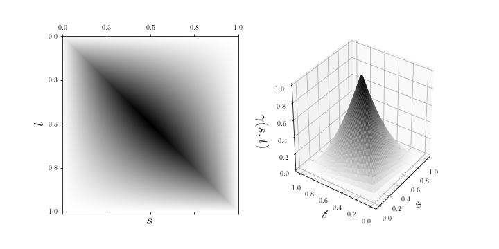
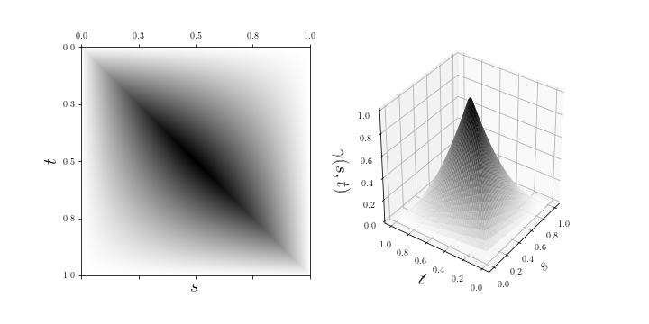
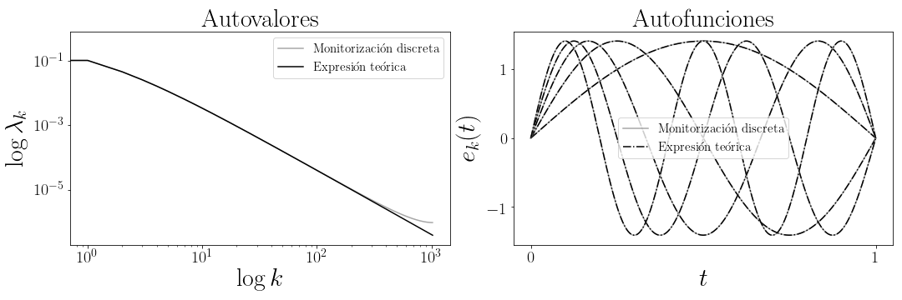
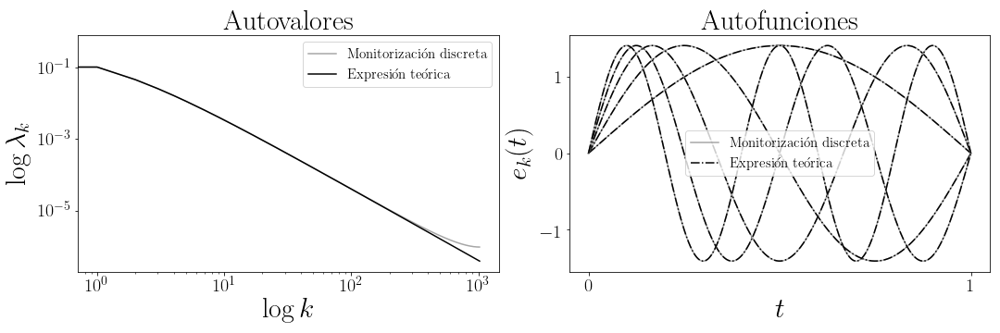

Profile
Computer scientist with expertise on statistical analysis of complex objects. Enthusiast on learning and creation. In continuous process of learning and searching for challenges. Great analysis and synthesis capabilities; curious, observant and questioning person. I enjoy researching, studying mathematical models and software development, from small simulations to full stack developments. I believe in dialog, honesty, clarity and collaboration.
Experience
Design, development and implementation in QALM project, critical software tool for data intensive computations applied to asset liability management (ALM). Analysis, processing and modelling of financial data for rate interest and liquidity risks evaluation and regulatory reports generation.
Implementation and full personalization for multiple entities of entire extraction, transformation and load processes (ETL) of banking information, in close collaboration with the client applying agile methodologies.
Skills
Im always learning, searching for new questions and problems to solve. Until now I have been able to develop a good knowledge in next fields (among others).
-
Asset Liability Management (ALM)
-
Data intensive computing
-
Software development
-
Teamwork
-
Agile methodologies
-
Machine learning
-
Functional Data Analysis (FDA)
-
Web scraping
-
Research
-
Android development
-
Artificial Neural Networks
Tools
I enjoy learning new languages and software development frameworks. These are the ones I mostly use.
-
Python
-
Java
-
Git
-
Django
-
SQL
-
Excel
-
C
-
Wildfly
-
Spring Framework
-
Latex
-
Selenium
-
Heroku
-
VBS
-
Spark
-
Docker
-
Bash (Unix shell)
-
Jenkins
I am also familiar to next tools.
-
Matlab
-
HTML
-
CSS
-
Makefile
-
C++
-
R
-
Kotlin
-
Javascript
-
Node.js
Publications
Final project corresponding to my Master's Degree in ICT Research and Innovation (i2-ICT). A computational analysis on spectral representation (in the domain of frequencies) of several types of gaussian processes in supported in bounded domains. Kernels such as brownian motion, brownian bridge, Ornstein-Uhlenbeck, Radial Basis Function (RBF), Matérn and exponential are studied.
 

 

Master's Degree in Mathematics and Applications' final project. On regularization of functional data and its embedding in optimal classification rules in the continuous time gaussian process framework.


Final project corresponding to Double Degree on Mathematics and Computer Science. The codification of shape of objects in terms of directional data is adressed, with an application to a real world classification problem. Included in the proceedings of the 27th International Conference on Artificial Neural Networks, ICANN 2018, held in Rhodes, Greece, in October 2018. Part of the Lecture Notes in Computer Science book series (LNCS, volume 11139). Also part of the Theoretical Computer Science and General Issues book sub series (LNTCS, volume 11139)